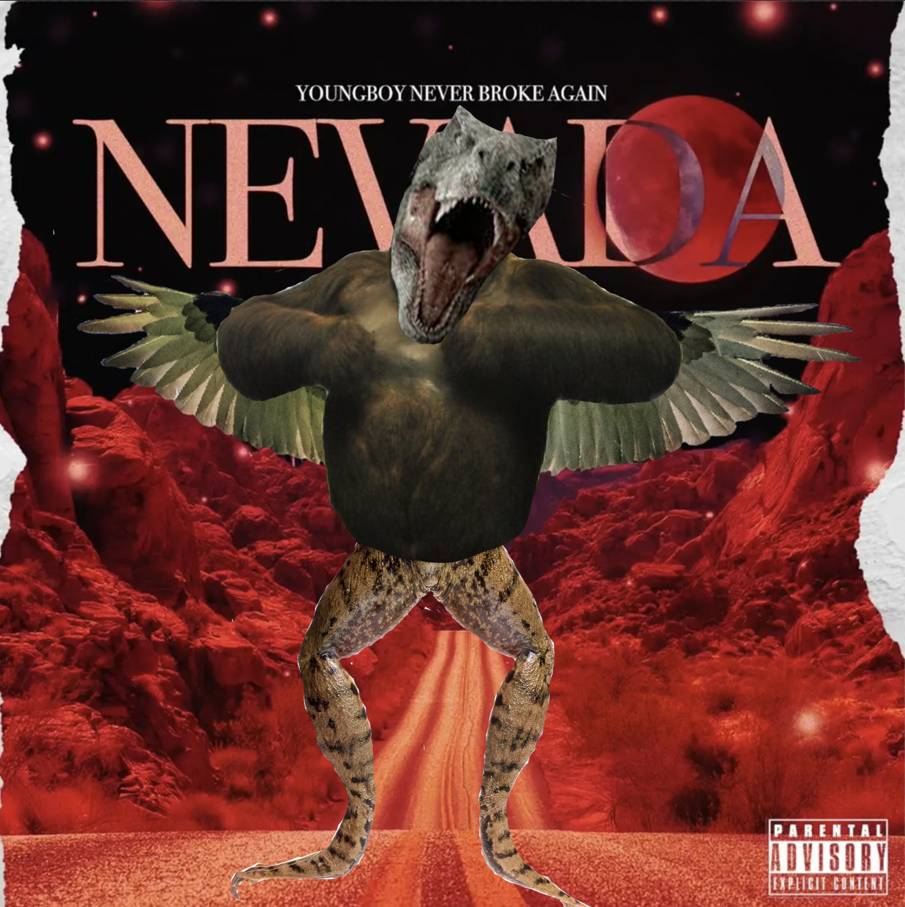
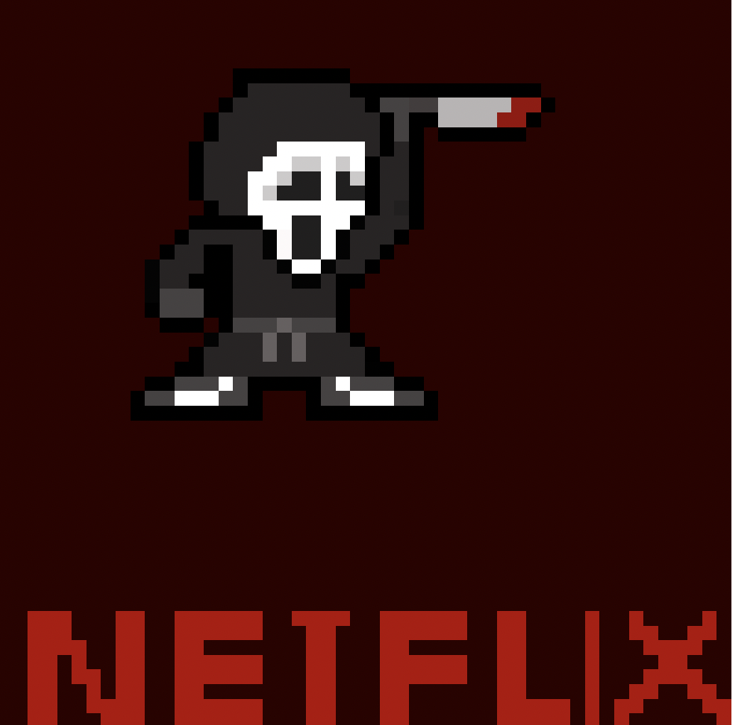
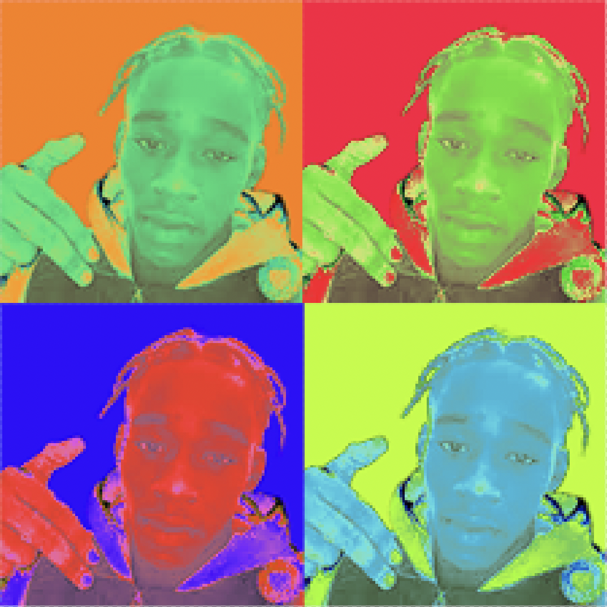

This is my website!
Visual Design <I'M choosing this topic because as a black male I think it's important that fighting for freedom & justice shows the integrity I have for the Black Lives Matter community.This is important to me because i'm already a target of disinformation as a black man.My photo placement wasn't really anything specific because it was just most victims of police brutality but it connected to the BLM movement
I thought about some of the most dangerous animals possible.If this beast could have abilities it would be able to hibernate.The brush tool, painted over the parts of my image that didn't want to keep on the animal specifically.After this I combined all of them together then added a background to complete the picture.

I made this project by In the layers panel, right click on the Background layer and click Duplicate Layer.Turn the original background layer off. Click on the eyeball to the left of the layer.Merge your Layers twice once in the beginning and once at the end.It made the picture look like it was a hypnotizing photo.Im assuming because of rotating the pictures 90 degrees clockwise it gave that specific effect.
I used the tools by photoshop adobe & I also used the ruler tool to see how many units I had in pixels .I started by thinking of lego characters because they are built like pixels of.My character looks like scream from scary movie .My character is wearing some ghost face mask & a black robe.My character would be in a game that has an adventure.Their purpose in the game would be to escape the ghost face
I combined one picture of myself four times.And I cut each photo into a square,then Go to LAYER > NEW FILL LAYER > SOLID COLOR and choose a color to fill behind your image. Move this layer below your photo layer in your Layers panel by dragging it underneath your photo. Merge the layers again (Command + E OR Layer Merge Visible).Click Command + U on your keyboard to open the Hue/Saturation adjustmentUse the slider to change the colors all at once. Once you like the change, press OK.